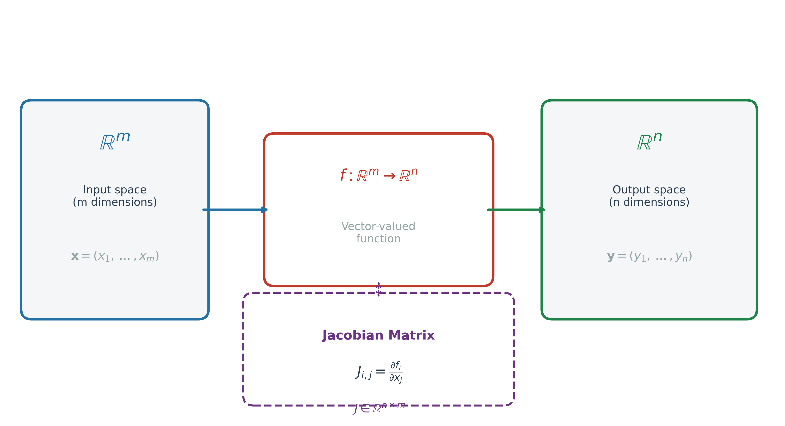
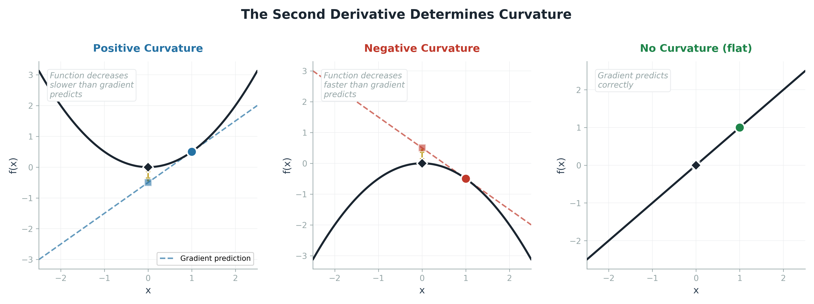
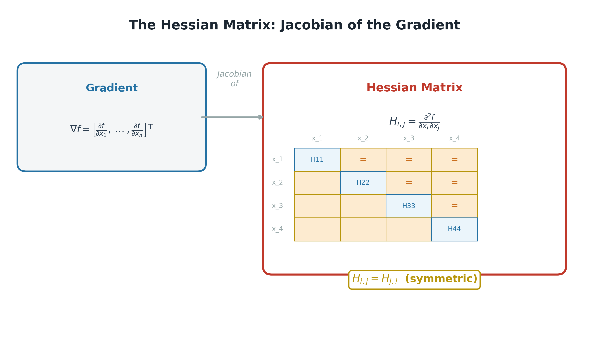
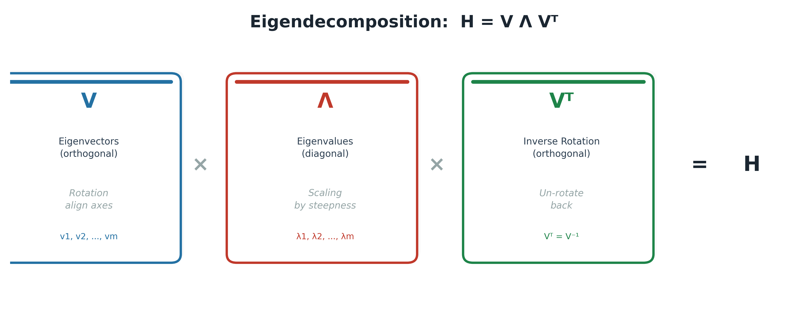
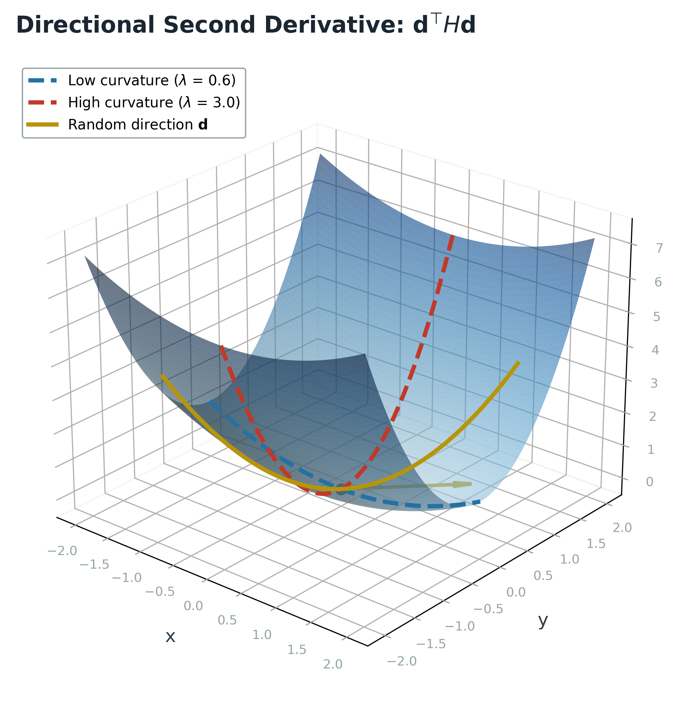
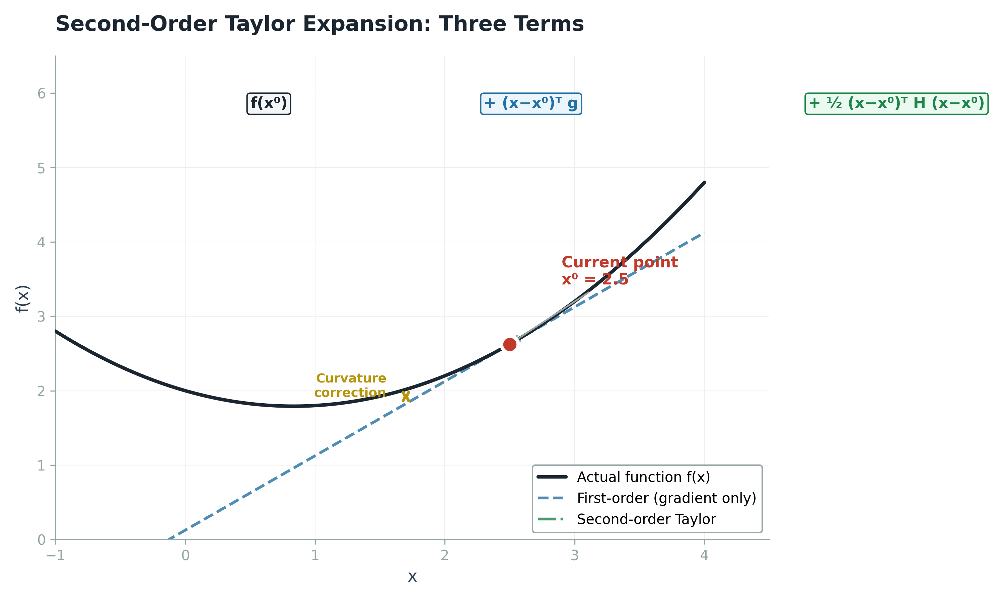
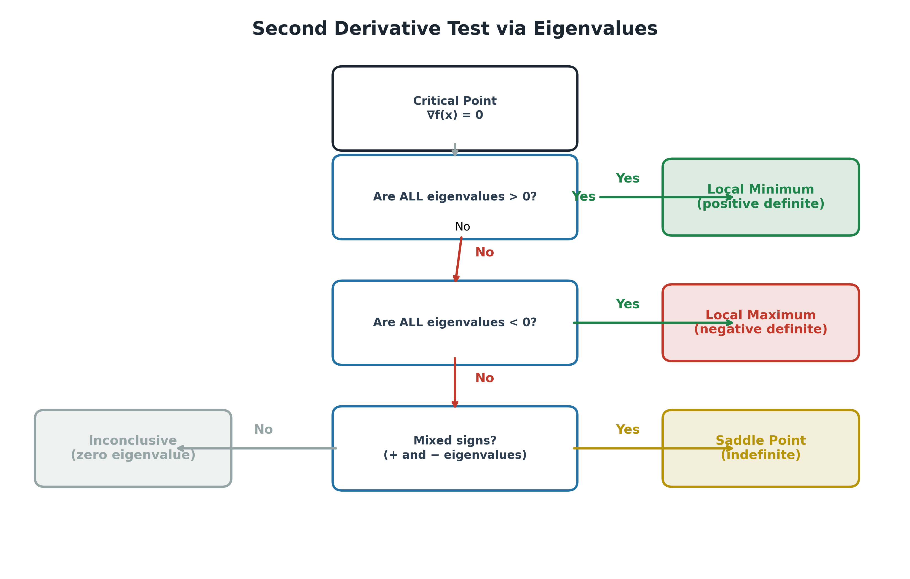
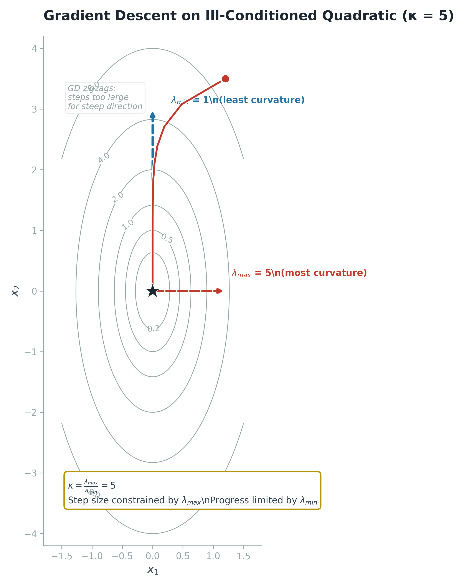
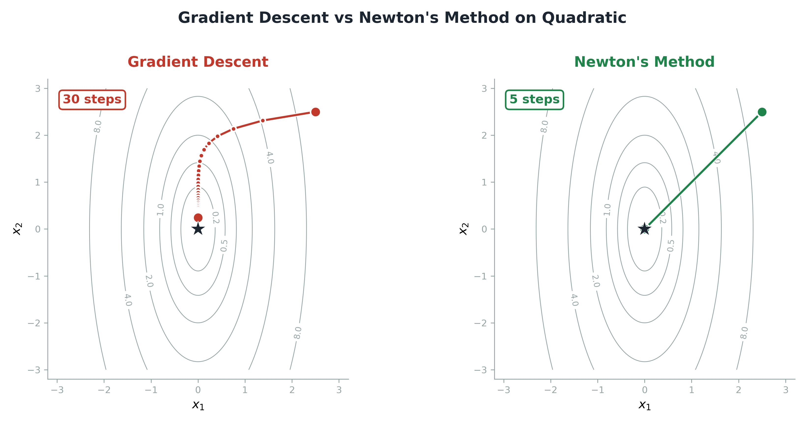
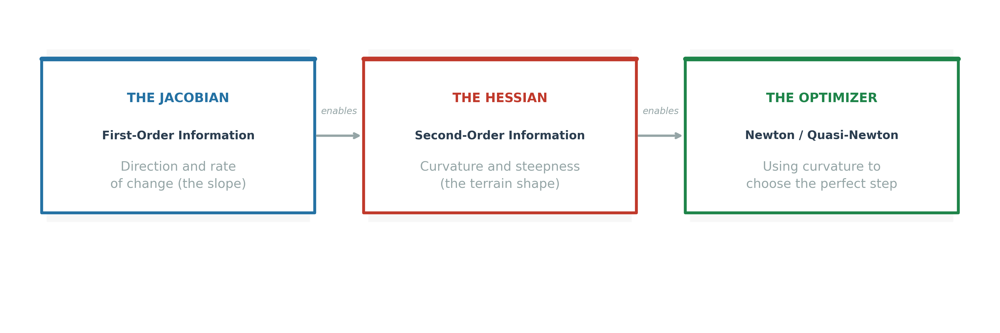

Looking for the math? For a term-by-term algebraic derivation of Newton's Method from the Taylor Expansion (including matrix dimension matching and curvature checks), see the companion appendix page:
Read Newton's Method Derivation →When Functions Become Maps: The Jacobian
In the previous blog, we explored gradient descent as a compass pointing downhill. But there is a fundamental limitation we deliberately ignored: the gradient only exists when your function outputs a single number. A loss function returns a scalar, so the gradient is a vector pointing in the direction of steepest ascent. But what happens when your function returns an entire vector of outputs? This is not an exotic scenario. In a neural network, each layer computes a vector of activations. The softmax layer outputs a probability distribution (a vector). The attention mechanism outputs a sequence of vectors. In all of these cases, you need to know how every output component changes with respect to every input component. That is exactly what the Jacobian matrix captures.

Figure 1: The Jacobian matrix maps the derivative of a vector-valued function $f : \mathbb{R}^m \to \mathbb{R}^n$.
Formally, if we have a function $f : \mathbb{R}^m \to \mathbb{R}^n$, then the Jacobian matrix $J \in \mathbb{R}^{n \times m}$ of $f$ is defined as follows. Each entry $J_{i,j}$ tells you how the i-th output component changes when you wiggle the j-th input component by an infinitesimal amount. If $n = 1$, the Jacobian collapses to the gradient (a row vector). If $m = 1$, it becomes a column vector of partial derivatives. In the general case, it is a full matrix that completely describes the local linear behavior of the function.
The Jacobian plays a crucial role in the backpropagation algorithm that trains every neural network. When you compute the error signal at the output of a layer, you need the Jacobian of that layer with respect to its inputs to propagate the gradient backward. This is why the computational graph of a neural network is essentially a chain of Jacobian multiplications: each layer passes its local Jacobian to the previous layer, and the chain rule composes them into the overall gradient of the loss with respect to every weight in the network. The Jacobian is the courier that carries the error signal through the computational graph. It is the first-order information: it tells you which way is downhill, but it tells you nothing about how the downhill slope itself is changing.
The Second Derivative: Measuring Curvature
There is a critical question that the gradient cannot answer: if you take a step in the negative gradient direction, will you get the improvement you expect? The gradient tells you the slope right now, but it says nothing about whether that slope is about to steepen, flatten, or reverse. That information lives in the second derivative, and it is the difference between a confident step and a potentially disastrous one.
Consider a quadratic function, which is the local approximation of almost any smooth function near a point. If the second derivative is zero, the function is a straight line: the gradient prediction is perfectly accurate, and a step of size one along the negative gradient decreases the function by exactly one unit. If the second derivative is negative, the function curves downward as you move, meaning the ground falls away faster than the gradient predicted. You get a bonus: the function decreases by more than the gradient alone suggested. If the second derivative is positive, the function curves upward, like the bottom of a bowl. The ground starts rising again as you step, so the actual decrease is less than predicted, and if your step is too large, you can actually overshoot and move uphill.

Figure 2: The second derivative determines curvature. The dashed line shows the gradient-only prediction; the diamond shows the actual outcome.
This is the fundamental insight that separates first-order from second-order optimization. The gradient says 'head this way.' The second derivative says 'be careful, the ground is about to turn.' In a high-dimensional loss landscape, some directions curve sharply upward while others are nearly flat. A single global learning rate cannot adapt to this variation, which is exactly why vanilla gradient descent zigzags and struggles. The second derivative, as we shall see, provides a direction-specific measure of curvature that can guide each component of the step independently.
The Hessian: The Jacobian of the Gradient
When a function has multiple input dimensions, there is not just one second derivative. There is a second derivative for every pair of input dimensions. These are organized into a square matrix called the Hessian matrix, defined as follows. Each entry $H_{i,j}$ is the mixed partial derivative of $f$ with respect to $x_i$ and $x_j$. The diagonal entries $H_{i,i}$ are the pure second derivatives (the curvature in each coordinate direction), and the off-diagonal entries $H_{i,j}$ (where $i$ differs from $j$) measure how the slope in one direction changes as you move in another.

Figure 3: The Hessian is built from all second partial derivatives. The diagonal (blue) holds pure curvatures; off-diagonal pairs (gold) are linked by symmetry.
The Hessian has a beautiful structural property. As long as the second partial derivatives are continuous, the order of differentiation does not matter: differentiating first with respect to $x_i$ and then $x_j$ gives the same result as differentiating first with respect to $x_j$ and then $x_i$. This is known as Schwarz's theorem or the equality of mixed partials, and it implies that $H_{i,j} = H_{j,i}$ for all $i, j$. In other words, the Hessian is always symmetric. This is not a trivial fact. Symmetry means the Hessian has exactly the same mathematical structure as a covariance matrix, a moment of inertia tensor, or a stress tensor in physics. It means we can apply the full machinery of linear algebra to it: eigendecomposition, spectral analysis, and the entire theory of real symmetric matrices.
Equivalently, and this is the definition that connects everything together, the Hessian is the Jacobian of the gradient. If you take the gradient vector (which is itself the Jacobian of a scalar function), and then ask 'how does this gradient change as I move through the input space?', the answer is the Hessian. This recursive relationship, gradient of $f$, then gradient of gradient, is the mathematical backbone of all second-order optimization methods. The gradient tells you the first-order story (where to go); the Hessian tells you the second-order story (how the terrain is shaped).
Eigendecomposition: Unlocking the Hessian
Because the Hessian is real and symmetric, it possesses one of the most powerful properties in all of linear algebra: it can be decomposed into a set of real eigenvalues and an orthogonal basis of eigenvectors. This is not just a mathematical curiosity. It is the key that unlocks the entire geometric meaning of the Hessian. The decomposition takes the form $H = V\Lambda V^T$, where $V$ is an orthogonal matrix whose columns are the eigenvectors, and $\Lambda$ is a diagonal matrix whose entries are the corresponding eigenvalues.

Figure 4: The eigendecomposition as a three-step process: rotate ($V$), scale by steepness ($\Lambda$), then rotate back ($V^T$).
The eigenvectors of the Hessian define the natural axes of the loss surface at a given point. They are the directions in which the surface bends independently, without any cross-coupling. If you rotate your coordinate system to align with the eigenvectors, the Hessian becomes a simple diagonal matrix of eigenvalues. Each eigenvalue tells you the steepness of the curvature along its corresponding eigenvector direction. A large positive eigenvalue means the surface curves sharply upward in that direction (like a narrow valley wall). A small positive eigenvalue means the surface is nearly flat (like a wide valley floor). A negative eigenvalue means the surface curves downward (like a hilltop or a saddle).
This geometric interpretation is extraordinarily powerful for understanding optimization. The eigenvectors tell you where the valleys and ridges are. The eigenvalues tell you how steep they are. When you understand that the Hessian can be decomposed this way, you realize that the loss surface is not some chaotic, unknowable object. It has a definite structure, and that structure is completely characterized by these eigenvalues and eigenvectors. The maximum eigenvalue determines the steepest curvature direction (the most dangerous direction for your optimizer), and the minimum eigenvalue determines the flattest direction (the direction where progress will be slowest). The spread between them, the condition number, determines how hard your optimizer has to work.
The Directional Second Derivative
The eigenvalues tell you the curvature along the eigenvector directions. But what about any arbitrary direction $d$ that you might choose to walk? The answer is given by the directional second derivative, computed as $d^T H d$. This is a scalar that measures the curvature of the function specifically along the direction of the unit vector $d$. Think of it as a 'curvature probe': you point it in any direction, and it tells you how much the slope changes in that direction.

Figure 5: The directional second derivative $d^T H d$ measures curvature along any chosen direction on the surface.
The mathematics of this expression is remarkably elegant when viewed through the lens of eigendecomposition. Substitute $H = V\Lambda V^T$ into $d^T H d$, and after rearranging, you get $(V^T d)^T \Lambda (V^T d)$. The term $V^T d$ transforms your walking direction into the eigen-coordinate system, telling you how much of your path aligns with each eigenvector. The diagonal matrix $\Lambda$ then scales each component by the corresponding eigenvalue. The final dot product sums everything into a single number.
This reveals a profound fact: the directional second derivative is always a weighted average of all the eigenvalues. If your direction $d$ is perfectly aligned with one eigenvector, the result is exactly that eigenvalue (all the weight goes to one term). If your direction is a mixture of several eigenvectors, the result is a convex combination of the corresponding eigenvalues, with eigenvectors that are more aligned with $d$ receiving more weight. The maximum possible value of $d^T H d$ is the maximum eigenvalue $\lambda_{\max}$ (achieved when $d$ points along the most curved direction), and the minimum possible value is the minimum eigenvalue $\lambda_{\min}$. This bounds the curvature in every direction to the interval $[\lambda_{\min}, \lambda_{\max}]$.
Second-Order Taylor and the Curvature Penalty
Everything we have discussed so far converges in the second-order Taylor series expansion. Around a current point $x^{(0)}$, any smooth function can be approximated by a quadratic polynomial in three terms: the original function value, a linear correction from the gradient (the first-order term), and a quadratic correction from the Hessian (the second-order term). The second-order term is the 'curvature correction' that accounts for how the terrain bends.

Figure 6: The second-order Taylor expansion includes a curvature correction that the first-order approximation misses.
Now consider what happens when we take a gradient descent step. We move to $x^{(0)} - \epsilon g$, where $g$ is the gradient and $\epsilon$ is the learning rate. Substituting this into the Taylor expansion, we can predict the new function value. There are three terms: the original value $f(x^{(0)})$, the expected improvement from the slope ($-\epsilon g^T g$, which is always negative and always good), and the curvature penalty (one-half $\epsilon^2 g^T H g$, which is always non-negative and always bad). The gradient term wants to decrease the function. The curvature term resists the decrease. When the curvature term is small relative to the gradient term, the step is effective. When it is large, the step can actually move uphill, increasing the function value.
This leads directly to the optimal step size. If we treat the Taylor approximation as exact and minimize it with respect to $\epsilon$, we obtain $\epsilon = g^T g / g^T H g$. This is the learning rate that would decrease the quadratic approximation the most. Notice what this formula does: it divides by $g^T H g$, which is the curvature penalty. More curvature means a smaller optimal step. In the worst case, when the gradient aligns with the eigenvector corresponding to the maximum eigenvalue $\lambda_{\max}$, the optimal step size becomes $1/\lambda_{\max}$. This means the eigenvalues of the Hessian directly determine the scale of the learning rate. A large $\lambda_{\max}$ forces a small step size, and that small step size may be insufficient to make progress in directions with small curvature.
The Second Derivative Test in Multiple Dimensions
In one dimension, the second derivative test is simple: if $f'(x) = 0$ and $f''(x) > 0$, then $x$ is a local minimum. If $f''(x) < 0$, it is a local maximum. If $f''(x) = 0$, the test is inconclusive. In multiple dimensions, the same logic applies, but instead of checking a single number, we examine the eigenvalues of the Hessian at the critical point. This is where the eigendecomposition pays its full dividend.

Figure 7: Decision tree for classifying critical points using the eigenvalues of the Hessian.
If all eigenvalues of the Hessian are positive, the Hessian is positive definite. The directional second derivative $d^T H d$ is positive in every direction, meaning the surface curves upward no matter which way you walk. This is a local minimum. Conversely, if all eigenvalues are negative, the Hessian is negative definite, and the point is a local maximum. The interesting case, the one that dominates deep learning, is when the eigenvalues have mixed signs: at least one is positive and at least one is negative. This is a saddle point. Along the direction of the positive eigenvalue, the surface looks like a minimum (it curves upward). Along the direction of the negative eigenvalue, it looks like a maximum (it curves downward). The name 'saddle' comes from this dual personality.
In high dimensions, saddle points are far more common than local minima. For a function of n variables, a critical point requires n conditions (all partial derivatives zero). To be a local minimum requires n additional conditions (all eigenvalues positive). The probability of satisfying all 2n conditions simultaneously drops exponentially with dimension, while the probability of a mixed-sign Hessian grows. This is why, in deep networks with millions of parameters, the real enemy is not local minima (which are rare) but saddle points (which are ubiquitous) and flat plateaus (where all eigenvalues are near zero, making the gradient vanishingly small).
Condition Number: The Gradient Descent Bottleneck
The condition number of the Hessian at a point, defined as $\kappa = \lambda_{\max} / \lambda_{\min}$, measures how much the second derivatives differ across directions. When $\kappa$ is close to 1, all directions have similar curvature, and gradient descent works well. When $\kappa$ is large, some directions have dramatically more curvature than others, and gradient descent performs poorly. This is the fundamental geometric reason why gradient descent gets stuck.
The problem is that gradient descent is blind to curvature. It sees only the gradient, which tells it the steepest direction, but it has no idea that this direction has massive curvature. It takes a step that is too large for the steep direction, overshoots the valley floor, and ends up climbing the opposite wall. On the next iteration, it reverses direction and does the same thing. The result is the characteristic zigzag pattern that wastes the vast majority of the optimizer's computational budget. Meanwhile, the step size must be kept small enough to avoid overshooting in the steep direction, which means it is too small to make meaningful progress in the flat direction. The optimizer is trapped between two contradictory constraints.

Figure 8: Gradient descent on a quadratic with condition number 5. The red path zigzags because the step size is constrained by the steepest direction.
This is precisely why techniques like BatchNorm and residual connections are so important in deep learning architecture. They do not change the minimum of the loss function, but they reshape the landscape to make the Hessian better conditioned. A well-conditioned Hessian means the eigenvalues are clustered together, which means gradient descent can use a larger learning rate safely, which means faster convergence. The architecture is not just defining the function to be optimized; it is defining the geometry of that optimization problem.
Newton's Method: The Second-Order Optimizer
Newton's method is the simplest and most elegant algorithm that uses Hessian information. Instead of taking a step proportional to the negative gradient (as gradient descent does), Newton's method sets the gradient of the second-order Taylor approximation to zero and solves for the critical point directly. The result is the update rule shown below, where $H^{-1}$ is the inverse of the Hessian. This inverse Hessian acts as an adaptive scaling matrix that automatically adjusts the step size for every direction simultaneously.
The inverse Hessian does something remarkable. In directions where the curvature is high (large eigenvalue), $H^{-1}$ shrinks the gradient component, producing a small, cautious step that avoids overshooting. In directions where the curvature is low (small eigenvalue), $H^{-1}$ amplifies the gradient component, producing a large, confident step that makes rapid progress. It effectively normalizes the landscape so that every direction looks the same, turning an elongated, ill-conditioned valley into a perfectly round bowl. For a positive definite quadratic function, Newton's method converges in a single step. For general smooth functions, it converges quadratically: the number of correct digits roughly doubles with each iteration.

Figure 9: Newton's method (right) reaches the minimum in 3 steps, while gradient descent (left) needs 30 steps of zigzagging.
However, Newton's method has a critical vulnerability: near saddle points, the Hessian is not positive definite. It has negative eigenvalues, which means $H^{-1}$ will point the update toward the saddle point rather than away from it. Gradient descent, by contrast, is only attracted to saddle points if the gradient happens to point directly at them (which is unlikely). This is a fundamental trade-off: second-order methods are dramatically faster near minima but can be actively harmful near saddle points. In practice, variants like damped Newton's method (which uses a scaled identity added to the Hessian) or trust region methods are used to maintain the benefits while avoiding the pitfalls.
C++ Implementation: Newton-Style Update
The following CUDA kernel demonstrates how curvature information modifies a gradient step. Each thread processes one weight: if the curvature (second derivative) is significant, it performs a Newton step (dividing the gradient by the curvature). If the curvature is near zero (flat region), it falls back to standard gradient descent. This is the essential logic that separates second-order methods from first-order ones: the curvature acts as a per-parameter adaptive learning rate.
/**
* @brief Newton-style update kernel (per-element curvature)
* @param weights Model parameters (in-place update)
* @param gradients First derivatives (f')
* @param curvature Second derivatives (f'')
* @param n Total number of parameters
*/
__global__ void newton_update_kernel(float* weights,
const float* gradients,
const float* curvature,
int n) {
int idx = blockIdx.x * blockDim.x + threadIdx.x;
if (idx >= n) return;
float g = gradients[idx];
float h = curvature[idx];
// If curvature is near zero, the surface is flat.
// Fall back to standard gradient descent.
if (fabsf(h) < 1e-6f) {
weights[idx] -= 0.01f * g;
} else {
// Newton step: divide gradient by curvature.
// Large curvature => small step (safe).
// Small curvature => large step (fast).
weights[idx] -= g / h;
}
}First-Order vs Second-Order: The Practical Reality
The distinction between first-order and second-order optimization algorithms is one of the most important practical decisions in deep learning. First-order methods, like SGD, Adam, and RMSProp, use only the gradient. They are simple, cheap to compute, and robust. Each gradient computation costs $O(n)$ for $n$ parameters, and the memory footprint is $O(n)$. Second-order methods, like Newton's method, use the Hessian as well. They are dramatically more efficient per step but dramatically more expensive: computing and storing the full Hessian costs $O(n^2)$, and inverting it costs $O(n^3)$. For a modern language model with billions of parameters, storing the full Hessian is physically impossible.
| Property | First-Order (SGD/Adam) | Second-Order (Newton) |
|---|---|---|
| Information used | Gradient only | Gradient + Hessian |
| Per-step cost | $O(n)$ | $O(n^3)$ for Hessian inverse |
| Memory | $O(n)$ | $O(n^2)$ |
| Convergence rate | Linear (slow) | Quadratic (fast) |
| Saddle point behavior | Generally avoids | Can be attracted to |
| Scalability | Billions of parameters | Thousands at most |
This scalability gap is why quasi-Newton methods like L-BFGS exist. Instead of computing and storing the full Hessian, L-BFGS maintains a compressed approximation of $H^{-1}$ using only the last $m$ gradient differences, where $m$ is typically 10 to 20. This reduces the memory from $O(n^2)$ to $O(mn)$ while retaining much of the curvature-adaptive behavior. Similarly, Adam can be viewed as a diagonal approximation to the Hessian: it maintains a running estimate of the per-parameter second moment of the gradient, which approximates the diagonal of the Hessian. It is not as powerful as the full Hessian, but it is $O(n)$ in both computation and memory, making it the default choice for deep learning.
Lipschitz Continuity and Convexity
Goodfellow closes the chapter by noting two theoretical tools that provide guarantees where deep learning otherwise has none. A function is Lipschitz continuous if there exists a constant $L$ such that the change in the function output is bounded by $L$ times the change in the input. This property allows us to quantify the assumption that a small change in the weights produces a proportionally small change in the loss, which is essential for proving convergence of gradient-based methods. Many deep learning problems can be made Lipschitz continuous with relatively minor modifications, such as gradient clipping.
The stronger theoretical framework is convex optimization. A convex function has a Hessian that is positive semidefinite everywhere, meaning all eigenvalues are non-negative at every point. Such functions have no saddle points, and every local minimum is necessarily a global minimum. Convex optimization algorithms come with strong convergence guarantees. However, most deep learning problems are fundamentally non-convex: the loss landscapes of neural networks are riddled with saddle points, local minima of varying quality, and flat plateaus. Convex optimization appears in deep learning only as a subroutine (for example, in the convex subproblems solved by some second-order methods), not as the overall framework.

Figure 10: The three pillars: Jacobian (direction), Hessian (curvature), and the optimizer that uses both.
The Jacobian and Hessian are not abstract mathematical curiosities. They are the two layers of intelligence that any optimization system can possess. The Jacobian, the first-order information, tells your optimizer which way is downhill. The Hessian, the second-order information, tells it how the downhill slope is changing. A system that uses only the Jacobian is reactive: it responds to the current slope but cannot anticipate what lies ahead. A system that uses the Hessian is predictive: it understands the shape of the terrain and adjusts its stride accordingly. Every practical optimizer in deep learning, from Adam to L-BFGS, is an attempt to capture some fraction of this second-order intelligence while staying within the computational budget that billions of parameters demand.